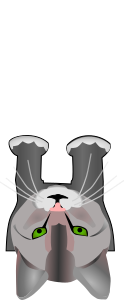
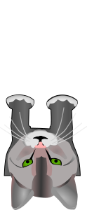

Wie spielt man das Spiel?
"Schnapp' dir den Fisch" ist ein Multiplayer-Spiel, indem man sich Fische schnappt. Es gibt verschiedene Fische. Manche Fische
sind gut und geben Punkte. Manche Fische sind schlecht und nehmen Punkte weg. Der rote Spieler nutzt die Taste "W" bzw. drückt
auf seine Katze, um sich den Fisch zu schnappen. Das gleiche Prinzip gilt für den blauen Spieler, indem er die Taste "Pfeil
nach oben" nutzt. Der Spieler, der zuerst 5 Punkte erreicht, gewinnt das Spiel. Danach ist es möglich, das Spiel erneut zu
starten, indem auf "Nochmal spielen" gedrückt wird. Tipp: Achte darauf, welchen Fisch du dir schnappst! Viel Spaß!
 Bereit?
Bereit?

Bereit?
Bereit?
